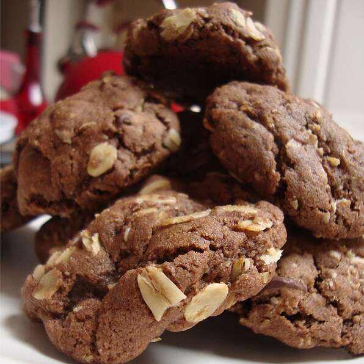

Chocolate Oatmeal Cookies

Description
Energy packed cookies that please even a finicky teenager! Raisins can be substituted for chocolate chips.
Ingredients:
- 1 cup all-purpose flour
- 3 tablespoons unsweetened cocoa powder
- 1 teaspoon baking powder
- 1/2 teaspoon baking soda
- 1/2 teaspoon salt
- 1/2 teaspoon ground cinnamon
- 1/2 cup margarine
- 1/2 cup brown sugar
- 1/2 cup white sugar
- 1 egg
- 1 teaspoon vanilla extract
- 1.25 cups rolled oats
- 1/2 cup semisweet chocolate chips
Steps:
- Preaheat oven to 350 degrees F (175 degrees C). Grease cookie sheets. Stir together the flour, cocoa, baking powder, baking soda, salt and cinnamon; set aside.
- In a large bowl, cream together the margarine, brown sugar and white sugar. Beat in the egg and vanilla. Stir in the dry ingredients using a wooden spoon. Mix in the oats and chocolate chips. Drop by tablespoonfuls onto cookie sheets, leaving 2 inches between cookies.
- Bake for 8 to 10 minutes in the preheated oven, or until lightly browned. Allow cookies to cool on baking sheet for 5 minutes before removing to a wire rack to cool completely.